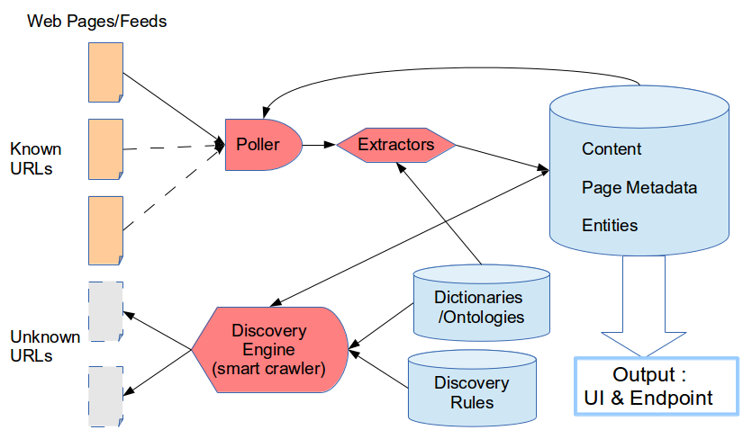

Fusepool NewsMonitor Module Requirements
Fusepool module for discovering and monitoring RSS/Atom
feeds on predetermined topics
Updates to this document will be made in-place - this version : 2014-04-21
NewsMonitor is a proposed OSGi
module for Fusepool/Apache
Stanbol. It's primary operation will be that of a (RSS/Atom) feed
reader/aggregator, not unlike the online Planet-style
aggregators which tend to be focused on a specific subject domain (e.g. Planet Python, Electra
Atlantis: Digital Approaches to Antiquity, Star
Astronomy). However, it will employ Semantic
Web technologies to go far beyond the functionality typically found
in feed readers. By aggregating feed metadata and extracting data from
(human-readable) feed content, it will provide linked data access to much
more information. Additionally, there will be feed discovery
functionality, allowing the system to automatically find and subscribe to
feeds which are relevant to the given topic.
In summary, it will :
- discover feeds containing posts in the given subject domain
- aggregate content
- identify and extract information from feed metadata and content
- expose the results as linked data using established vocabularies
- display results via Web UI
The components and functionality of NewsMonitor map to aspects of the
Fusepool Data|Hack|Award|2014
call as follows :
- Use cases (described below)
- Refine data - RDF will be
extracted from the structured data found in feeds, both through refining
RSS/Atom metadata and entity extraction applied to the content
- Reuse data - the data obtained
will be aggregated according to topic and displayed as a combined news
channel, with corresponding linked data exposed
- Release data - as above, with
a live demo
Developer :
the NewsMonitor module will be developed by Danny Ayers as a lone coder
(aided by the Fusepool group), devoting as much time as necessary to the
project.
License : Apache 2
Code Repository
: initially danja/feedreader-prototype
on GitHub
There is a significant quantity of useful user-generated content on the
Web, and much of it is found in blogs. This represents a hugely valuable
resource that is currently underused. By automatically aggregating and
distilling the information found in this content, it may be exposed in a
fashion that provides much more value to the end user. A large proportion
of blogs and news sites provide RSS or Atom feeds, which although rarely
'clean', is structured data which is much more suitable for conversion to
Semantic Web models than arbitrary HTML.
The advantages of this information include :
- more human-digestible than typical Semantic Web data
- generated in real time, without the latency found in traditional
journalism and formal research
- not constrained by national borders, usually open and free
It should be noted there are disadvantages with this source of
information, some of which will have implications for the implementation
of NewsMonitor. The disadvantages of feed material include :
- informal language, more ambiguity
- less rigorous than conventional journalism/research
- potential legal/copyright complications
To bootstrap the system, a set of URLs of feeds associated with the
desired topic will be required. Additionally, RDF vocabularies and keyword
dictionaries will be required to determine relevance of given sites and to
identify entities in content.
The system will be domain-agnostic, but to demonstrate that it may be
reused for different topics, at least two should be tried out during
development. There are many vocabularies available on the Web, and there
are existing dictionaries/vocabularies for string/dictionary matching
within Fusepool (plus those to be provided by ProcessMonitor [Alexandro]
and PlanningMapper [Andreas]).
Candidate topics include :
European Parliament - focusing on
MEPs. As well as being informative, this would also provide data for
sentiment analysis, e.g. estimating the popularity of individual MEPs.
This should be a good starting point during development as the domain is
relatively constrained so a reasonably small dictionary may be used.
Medical - diseases,
pharmaceuticals etc. This is a broad domain and will require a much larger
keyword dictionary. As such it should make a good test of relevance
determination at the other extreme to MEPs.
Semantic Web - RDF, linked data
etc. As well as (hopefully) being of interest to Fusepool developers,
there are two reasons why this may make a good choice of topic, both
relating to the Planet RDF site.
Firstly this site offers a feedlist (blogger.rdf)
that has been manually compiled over several years and should make an
excellent seed list for NewsMonitor. Secondly, as the site is of known
relevance, it should make a good reference against which to compare the
results of feed discovery by NewsMonitor.
At least four demographics are most likely to be interested in
NewsMonitor, for viewing and/or deployment :
- domain professionals
- lay users - you and I
- journalists
- linked data developers
The
main use case for NewsMonitor is to allow an end user
to monitor articles on topics relevant to them. The fact that the system
may be configured for a specific domain leaves the door open for use
cases applicable to the chosen domain. For example, as mentioned
earlier, in the European Parliament domain the data generated may be
used for determining popularity of particular MEPs. In the medical
domain, a possible use case could be the indication of potential
drug side effects. In a way this could be seen as passively crowdsourcing
research. Given the informality and immediacy of blogs they are excellent
for augmenting information obtained from more formal sources.
It should also be noted that thanks to the use of Semantic Web
technologies, there will be plenty of scope for unanticipated reuse and
serendipity.
Assuming everything goes according to plan, upon completion it is
believed that NewsMonitor will add significant value to the Fusepool
project. Specifically it will provide :
- Showcase Application - good for quick start, and offers an
application that has immediate value for end users
- Application reusable for different domains
- Poller/Aggregator component (in module)
- Intelligent Discovery Engine component (in module)

The main components of the system are the Data/Content
Store Fusepool ECS (shown in
the diagram as the three blue cylinders), the Poller
NewsMonitor component, a set of
data Extractors NewsMonitor
RDFizers and existing Fusepool components and the Discovery
Engine NewsMonitor component.
Data/Content Store
Three sets of data will be contained in the store:
- Dictionaries/Ontologies will used to guide data extraction and help
determine page relevance within the Discovery Engine
- Discovery Rules will be applied against entities extracted from
candidate page content (and page metadata) to determine page relevance
- Page Metadata & Content will be the feedlist and material derived
from subscribed feeds. This is the primary output of the system
Poller
The role of the Poller is to periodically step through the URLs in the
feedlist and to obtain any new material found in those feeds.
Extractors
The role of the extractors is to :
- convert feed content to RDF
- extract entities from entry content
- extract linked URLs as potential sources of further relevant feeds
Discovery Engine
The role of the Discovery Engine is to take the URLs and entities from a a
given entry and by means of a series of heuristics determine the relevance
of the target page. Part of the heuristics will be rule-driven, with the
rules contained in the data store.
Simple heuristics will also be applied to find feeds linked from the target
page (Feed Autodiscovery and scraping).
by a set of relevance measures
The system will be initialized by loading the feedlist into working memory
(the seed feedlist will previously have been loaded from file).
There will then be three main threads running concurrently. The Poller
thread will loop through feed URLs getting new content/data and passing it
into the store. The Extractor thread will examine new content and identify
entities and any other potentially useful data found in the feeds, including
any URLs pointing to other sites. This data will also be passed into the
store. The Discovery thread will take the remote URLs found by the
Extractor, and for each URL determine a relevance score for the target page.
If the score is above the given threshold, feed autodiscovery will be
applied to the target page to find any associated RSS/Atom feeds, the URLs
of which will be added to the feedlist. Relevance checks will also
periodically be made on feeds already on the list, and should they fall
below a given threshold their URLs will be removed from the active list
(along with any feeds that are unavailable).
The exact details of all these are to be decided, it's anticipated that
considerable experimentation will be needed, especially around determining
the relevance score.
Poller Thread
for each URL :
- Conditional GET to retrieve feed content
- feed content translated to RDF
- (on first run only) feed top-level metadata passed to store
- new content and post-level metadata passed to store
- entity extraction applied to
Extractor Thread
This will apply existing Fusepool/Stanbol components to identify entities
in entries, along with whatever custom extraction is deemed necessary
(e.g. URLs and link labels for remote sites.
Discovery Engine Thread
This will apply heuristics to the data retrieved from feeds alongside
dictionaries/vocabularies to determine likely relevance of candidate sites.
Initially this will be based on simple keyword matching, with other
approaches being added as time permits (ideally the relevance tools will be
pluggable, so the configuration can easily be changed and other tools added
according to what isfound to work well with the given subject domain).
Summary
The interfaces will primarily be accessing the graph(s) associated with the
Content, Page Metadata and Entities extracted from the feeds, using the HTTP
protocol. For machine-machine communications, this should be mostly
achievable using existing Fusepool functionality, although access to
NewsMonitor components is desirable. The user interfaces will be in-browser
using standard HTML, CSS & Javascript technologies.
The interfaces will expose the following:
- system data
- feed data
- aggregated posts, keyword searchable
- linked data (using established vocabularies)
- SPARQL Endpoint
- RESTful interfaces to system components as appropriate
Administration Page
The admin page with include UI elements to control the following :
- shutdown
- start/stop polling
- polling period (time between refreshes)
- start/stop extraction
- extraction period
- start/stop discovery
- discovery period
- add feed URL
- relevancy threshold to subscribe to new sources
- relevancy threshold to remove feeds from the active list
- expiry time for entries (from one day to infinite)
The admin page will also include a list of subscribed feeds. Each of
these will have a control to allow removal of feed from the active list.
It is likely that other controls will be desirable, such as choice of
extraction and relevancy tools. This will be added as time permits.
Again, as time permits, per-feed statistics will also be provided.
Activity Log
Each of the components of the system will log its activity to a common
location (ideally the store). These logs will be viewable as a Web page,
ideally with control over the level of detail.
Feed View Pages
- 1-Pane : “River of News” -
recent posts sorted by individual post date and/or most recently updated
blog (mockup)
- 3-Pane : feedlist, entry
titles, individual entry content (mockup)
RDF View Pages
To explore the data generated by the system, some form of navigable
interface will be provided over it. In the first instance the existing
Fusepool RDF UI will be used, which (as time permits and necessity demands)
may later be customized. Additional custom UIs may be added later.
- RSS 1.0 (for input)
- RSS 2.0 (for
input)
- Atom (for input and
output)
- OPML (is de facto
standard for feedlist import/export)
- RDF formats (provided via
existing components)
Feed Reading
| Syndication Client
Actions on HTTP Status Codes |
| Status Code |
Reason Phrase |
Appropriate Action |
| 100 |
Continue |
Record - if persistent, unsubscribe |
| 101 |
Switching Protocols |
Record - if persistent, unsubscribe |
| 200 |
OK |
* Read data |
| 201 |
Created |
Record - if persistent, unsubscribe |
| 202 |
Accepted |
Record - if persistent, unsubscribe |
| 203 |
Non-Authoritative Information |
Record - if persistent, unsubscribe |
| 204 |
No Content |
Record - if persistent, unsubscribe |
| 205 |
Reset Content |
Record - if persistent, unsubscribe |
| 206 |
Partial Content |
Record - if persistent, unsubscribe |
| 300 |
Multiple Choices |
* Follow redirection (keep current URI) |
| 301 |
Moved Permanently |
* Follow redirection, replace URI |
| 302 |
Found (Temporary Redirect) |
* Follow redirection (keep current URI) |
| 303 |
See Other |
* Follow redirection (keep current URI) |
| 304 |
Not Modified |
* Use current cache |
| 305 |
Use Proxy |
* Follow redirection (keep current URI) |
| 307 |
Temporary Redirect |
* Follow redirection (keep current URI) |
| 400 |
Bad Request |
Record - if persistent, unsubscribe |
| 401 |
Unauthorized |
* Unsubscribe |
| 402 |
Payment Required |
* Unsubscribe |
| 403 |
Forbidden |
* Unsubscribe |
| 404 |
Not Found |
* Record - if persistent, unsubscribe |
| 405 |
Method Not Allowed |
Record - if persistent, unsubscribe |
| 406 |
Not Acceptable |
Record - if persistent, unsubscribe |
| 407 |
Proxy Authentication Required |
Record - if persistent, unsubscribe |
| 408 |
Request Time-out |
Record - if persistent, unsubscribe |
| 409 |
Conflict |
Record - if persistent, unsubscribe |
| 410 |
Gone |
* Unsubscribe |
| 411 |
Length Required |
Record - if persistent, unsubscribe |
| 412 |
Precondition Failed |
Record - if persistent, unsubscribe |
| 413 |
Request Entity Too Large |
Record - if persistent, unsubscribe |
| 414 |
Request-URI Too Large |
Record - if persistent, unsubscribe |
| 415 |
Unsupported Media Type |
Record - if persistent, unsubscribe |
| 416 |
Requested range not satisfiable |
Record - if persistent, unsubscribe |
| 417 |
Expectation Failed |
Record - if persistent, unsubscribe |
| 500 |
Internal Server Error |
Record - if persistent, unsubscribe |
| 501 |
Not Implemented |
Record - if persistent, unsubscribe |
| 502 |
Bad Gateway |
Record - if persistent, unsubscribe |
| 503 |
Service Unavailable |
Record - if persistent, unsubscribe |
| 504 |
Gateway Time-out |
Record - if persistent, unsubscribe |
| 505 |
HTTP Version not supported |
Record - if persistent, unsubscribe |
[table from Beginning
RSS and Atom Programming, Ayers/Watt 2005]
Admin
- HTTP/1.1
- SPARQL (via
existing Fusepool components)
- Feedlist Loader : read list of
feed URLs from text file, load into store (formats: text URL list,
Turtle, OPML)
- Feed Autodiscovery : given a
HTML page, find URLs of any linked feeds (either explicitly stated in <head>
metadata or merely linked in <body>)
The plan is to approach development in a very iterative fashion, aiming to
get a quick & dirty system featuring core functionality together as soon
as possible. This will then be refactored as functionality is extended.
- identify existing Fusepool/Stanbol components that fulfill parts of
the requirements
- hack prototype system, virtually standalone - will use external
triplestore (Fuseki)
for storage, accessing via SPARQL 1.1
- minimum viable product... (i.e. get it working!)
- replace/refactor prototypes components into OSGi and integrate with
Fusepool
- custom UIs (if necessary)
- live demo deployment
Development will take place over two months. The first month will be devoted
to getting a basic prototype up and running. The second month will be
devoted to integrating this with Fusepool/Stanbol, making the system robust
and adding extra functionality as time permits. Different areas may be
addressed in parallel, though to ensure progress is being made, the
provisional roadmap looks like this :
end of week
- identify usable Fusepool/Stanbol components, clarify requirements
& design
- prototype poller
- prototype extractor & discovery components
- prototype system integration
- details to be decided
- details to be decided
- completed components, OSGi module integrated with Fusepool
- live demo
As development has only just started, many aspects have yet to be pinned
down. It is hoped that the following points will be clarified by the time
the prototype is ready (end of week 4) :
- time, cost, scope..?
- existing components?
- custom UI?
- discovery rules engine : use RDFS/OWL reasoning? SPARQL? Drools?
- copyright issues?
- subproject name(s)..?
It is expected that the project as described above is quite ambitious for
the time available, though it will be open to lots of extension. It is hoped
that development will be continued, especially with community input. Here
are some possible enhancements :
- real-time actions triggered in response to search queries
- user interaction, voting up/down sources
- per-user customization
- UI integration with more of LOD cloud
- enrichment with schema.org, RDFa annotation of human-oriented views
- exploit any FOAF or other personal profile data about bloggers to
build a social dimension into the system